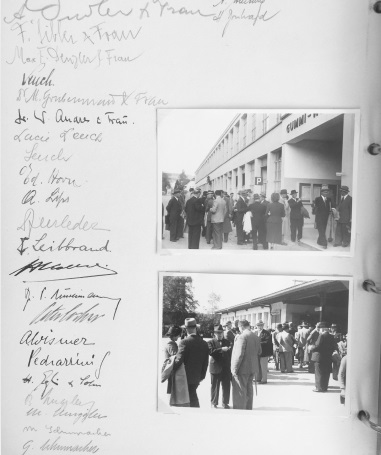
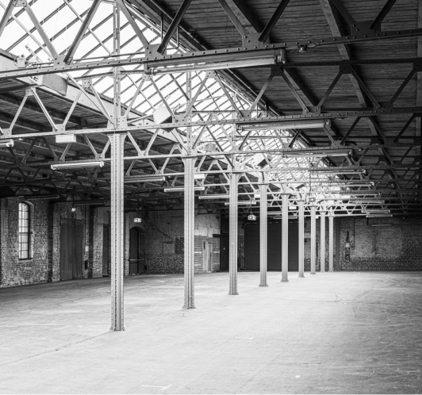
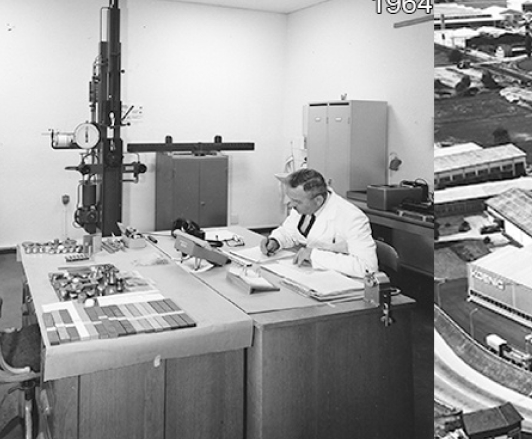
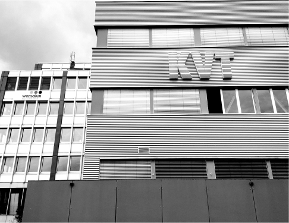
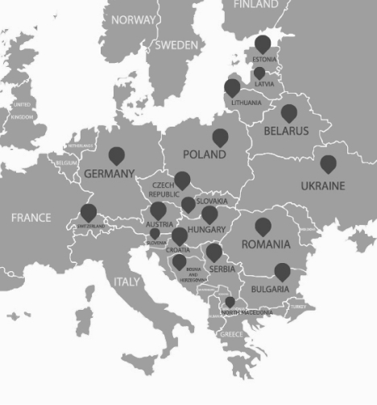
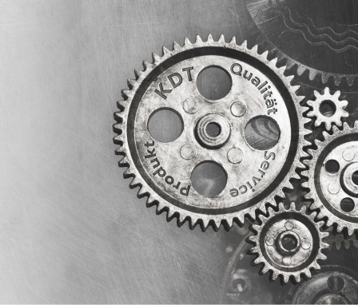

- 1927
- 1948
- 1961
- 1985
- 2000
- 2010
- 2012
- 2021
- HUETE
- 
- 
- 
- 
- 
- 
-
„Einer Anregung Herrn Dr. Honeggers, des Chef– Metallurgen von Brown, Boveri & Co., etablierten wir uns als konsultierende Ingenieure.“
(Dr. Max Koenig. Aus Arbeit und Musse. 1961, Zollikon und Zürich, S.4) -
„Der Bau des Lagerhauses KOMAX (KOENIG MAX) in Dietikon […] war die Wende zu der Entwicklung und Spezialisierung meiner Firma in „Bleche aller Werkstoffe und Befestiger.“
(Dr. Max Koenig. Aus Arbeit und Musse. 1961, Zollikon und Zürich, S.4) -
Unternehmer Max Koenig deutet sein neues Ziel an – die Gründung des "ersten schweizerischen Service Center für Bleche und Befestiger."
(Dr. Max Koenig. Aus Arbeit und Musse. 1961, Zollikon und Zürich, S.4) -
Entsteht die Koenig Verbindungstechnik AG - die KVT AG.
-
Seit 2000 erweitert die KVT ihre internationale Präsenz, akquiriert 2007/2008 die beiden US-Unternehmen Sherex Industries und Farmington Engineering und gründet die SFC Koenig, LLC., die erste außereuropäische Niederlassung
-
2010 werden die KVT Niederlassungen weltweit zu einer Gruppe unter dem Namen KVT Solutioneering Group zusammengefasst.
-
Die Bossard Gruppe übernimmt den Bereich Verbindungstechnologie von der KVT Solutioneering Group. Dieser Bereich tritt seitdem selbständig als eigene Firma KVT-Fastening auf.
-
Durch ein Management Buy Out einerseits und den Zusammenschluss von KVT-Fastening mit der Bossard Gruppe andererseits trennen sich die Geschäftsbereiche Verbindungs- und Klebetechnologie. Daraus entsteht ein eigenständiges Unternehmen – die KDT AG. Mit dem neu gegründeten Unternehmen fokussiert sich KDT auf die Klebe- wie auch auf die Dosiertechnik. Weiterhin werden Sie als Kunde von KDT die bekannten Marken Loctite, Kömmerling, Scapa, 3M, Araldite, KDG, KUV, Tapeko erhalten.
-
„Heute, […], dürfen wir es wagen […] die gewonnenen Erfahrungen auf modernster Grundlage […] neu zu verwirklichen.“
(Dr. Max Koenig. Aus Arbeit und Musse. 1961, Zollikon und Zürich, S.5)